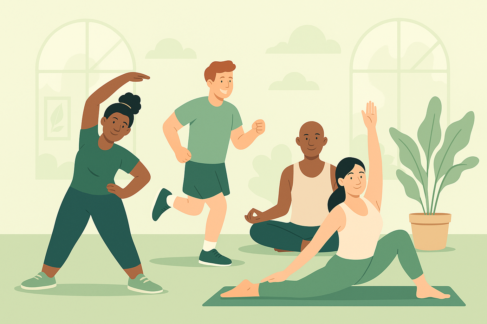
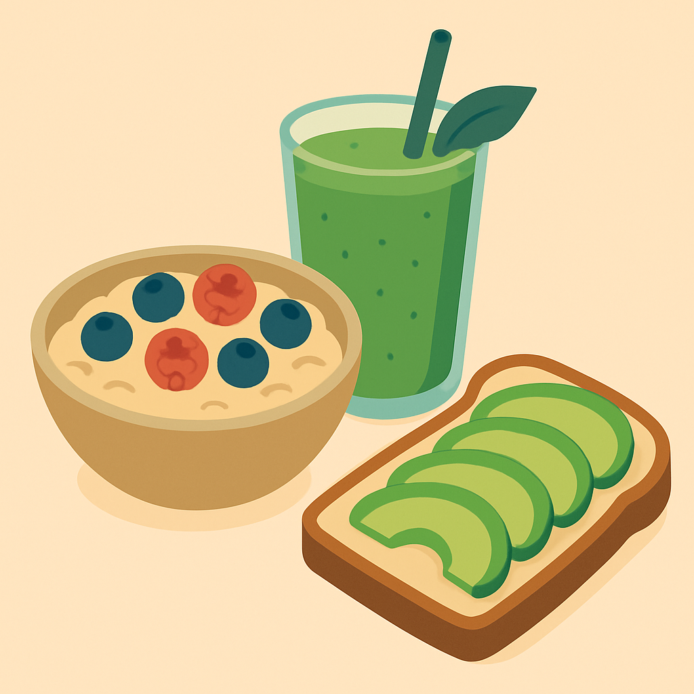

Nutrition
Understanding Macronutrients for a Balanced Diet
Learn about the importance of proteins, fats, and carbohydrates in your daily meals. A balanced intake of these macronutrients is crucial for energy, growth, and overall health. We delve into sources and recommended portions.
(Full article page to be developed later)

Fitness
Top 5 Exercises for a Stronger Core
Discover effective exercises to build core strength and improve your posture. A strong core is essential for stability, balance, and preventing injuries. We provide step-by-step guides for each exercise.
(Full article page to be developed later)
Mental Wellness
Simple Mindfulness Techniques for Stress Relief
Explore easy ways to incorporate mindfulness into your daily routine for a calmer mind. Stress can significantly impact your health, and these techniques can help you manage it effectively.
(Full article page to be developed later)

Healthy Recipes
Quick & Healthy Breakfast Ideas
Start your day right with these nutritious and easy-to-make breakfast recipes that will keep you energized throughout the morning.
(Full article page to be developed later)